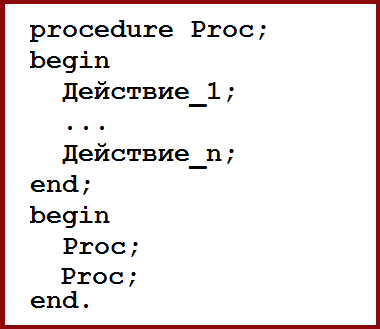
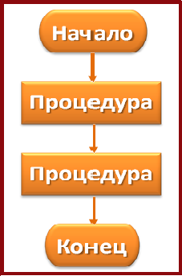

При решении некоторых задач бывает удобно разбить их на подзадачи, каждую из которых можно оформить как самостоятельный алгоритм.
|  Псевдо-алгоритмический язык |
 Блок-схема |
Каждый такой алгоритм называется подпрограммой (процедурой). Процедуру в основной программе можно вызывать неоднократно.